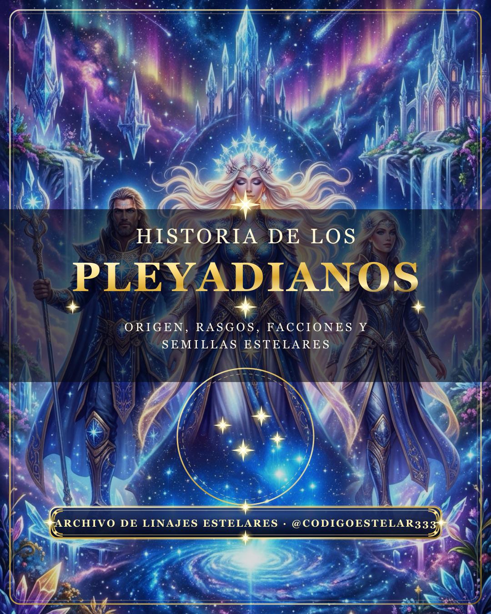
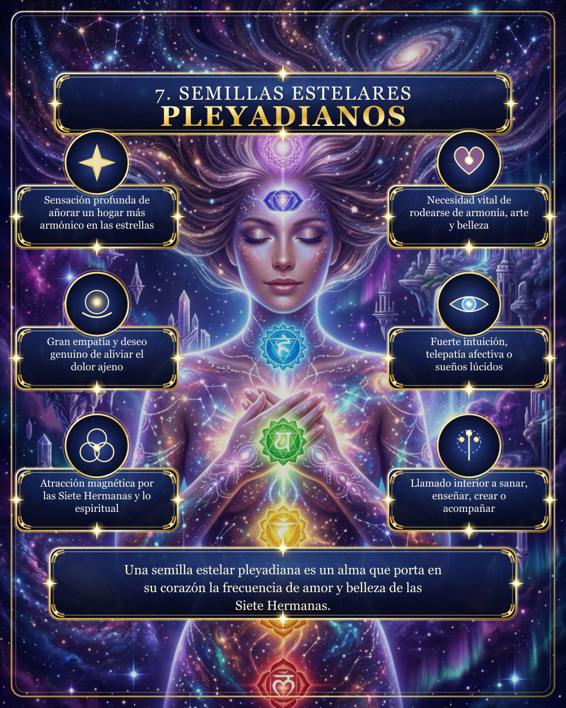
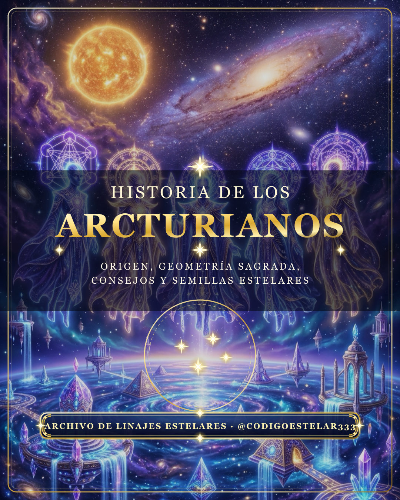

Recuerda el Origen Cósmico de tu Alma y el Llamado de tu Linaje Estelar
Desde la cuna primordial de Lyra hasta las Siete Hermanas de las Pléyades, los templos de luz de Arcturus, los soles sagrados de Sirio, la espiral libre de Andrómeda y las aguas cristalinas de Mintaka en Orión: explora la historia, facciones, rasgos y señales de cada familia galáctica.


Historia, Facciones y Semillas Estelares por Linaje
Selecciona una raza galáctica para explorar sus 9 láminas ilustradas (Origen, Cómo se Describen, Rasgos Energéticos, Facciones, Historia Galáctica, Vínculo con la Tierra, Semillas Estelares y Propósito).
HISTORIA DE LOS PLEYADIANOS · Pack de 9 Láminas
Hacer el Test de Resonancia →Reels Animados por Linaje Estelar
Arte celeste hiperdetallado, marcos dorados y narración envolvente para @codigoestelar333
Historia de los Pleyadianos
Origen en Lyra, las facciones Ahil, Taal y Pueblos de Maya, y las señales de las semillas estelares pleyadianas.
Historia de los Arcturianos
Los arquitectos de la luz, cámaras cristalinas de regeneración, la Orden de Metatrón y su misión en la Tierra.
Historia de los Sirianos
Los guardianes del conocimiento ancestral en Egipto, los cetáceos sagrados y las semillas estelares de Sirio.
Historia de los Andromedanos
El Consejo de Andrómeda, los emisarios de Zenetae y el despertar de la libertad interior.
Historia de los Liranos
Los ancianos fundadores de Lyra, los mísiticos de Vega, la nobleza Urmah y el fuego primordial de la creación.
Historia de Orión y Mintaka
El paraíso acuático de Mintaka, la integración de la polaridad y el misterio sagrado de las tres estrellas.
Descubre a qué Linaje Estelar Pertenece tu Alma
Responde las 12 preguntas de nuestro mapa de resonancia y descubre si tu frecuencia dominante proviene de las Pléyades, Arcturus, Sirio, Andrómeda, Lyra o Mintaka en Orión, junto con tu misión espiritual y tu guía descargable.
Iniciar Test de Semilla Estelar Ahora →